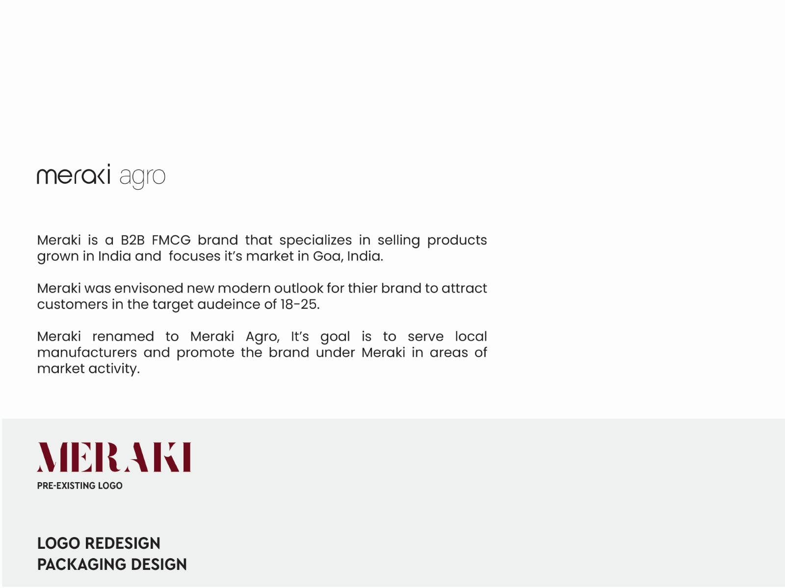
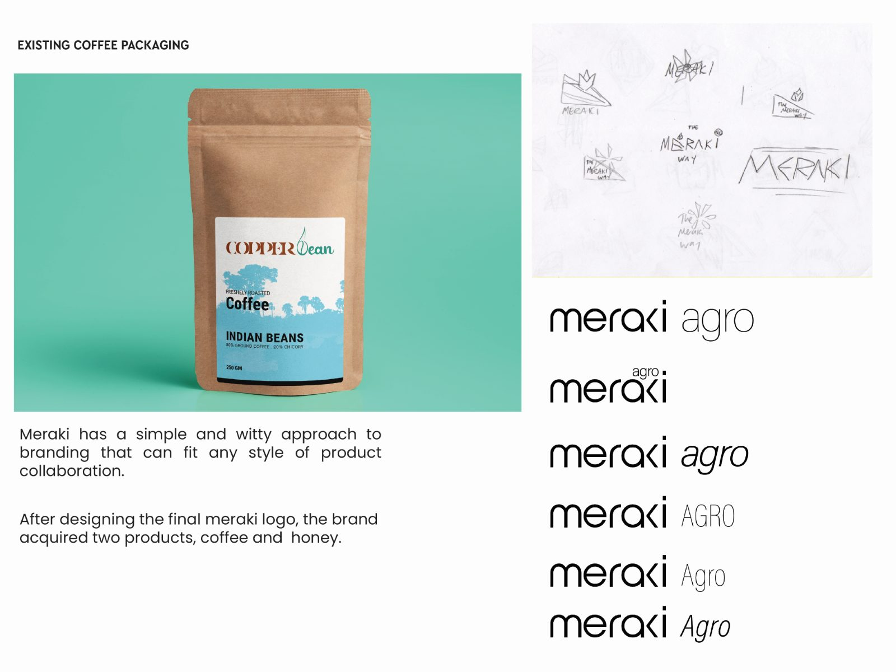

Meraki
Meraki is a B2B FMCG brand specialising in products grown in India, with its market focused in Goa. The rebrand was carried forward on new user data and the audiences the brand intended to reach — a modern outlook aimed at customers aged 18 to 25.
A B2B brand trying to reach a much younger customer.
Meraki is a B2B FMCG business specialising in products grown in India, with its market focused in Goa. The rebrand was driven by new user data and by the audience the business intended to reach next — customers aged roughly 18 to 25.
The existing mark was a serif wordmark that placed the brand a generation older than the people it wanted.
Designing a system for products that did not exist yet.
The brief was a rebrand, but the business was mid-transition: repositioning from pure B2B toward serving and promoting local manufacturers under its own name. Which products would end up under that name had not been decided.
That makes the usual approach — design the identity around the hero product — impossible. Anything tuned to the current catalogue would need redrawing the moment the catalogue changed.
Build for collaborations that had not happened yet.
Redrawn, Meraki became a light, wide, near-monoline wordmark, and the business was renamed Meraki Agro to carry the local-manufacturer ambition. The system was built to be witty and simple enough to sit alongside any partner’s product rather than to dominate it.
Deliberately, that means the mark does not assert much on its own. A heavier, more distinctive wordmark would photograph better in isolation and would have been an easier presentation — and it would have fought every co-branded pack it ever appeared on.
Two products arrived after the logo, and neither needed a redraw.
This is the part I would point at. After the final wordmark was designed, the brand acquired two products, and the system absorbed both without alteration.
Copper Bean, an Indian filter coffee, keeps the Meraki identity while speaking to drinkers of authentic South Indian coffee. Wild Honey draws its packaging from the elements of honey itself — bees and lavender — under the same wordmark. The mark was tested by events after I finished, which is a better test than any presentation.
Four spreads, front to back.




The Meraki wordmark also appears in Logofolio, alongside Swastha, Marin and Orinko.
What shaped the work as much as the brief did.
An unfinished repositioning. The business was changing what it was while the identity was being designed, so the system had to tolerate a moving brief.
An existing mark with existing equity. The serif wordmark was wrong for the target audience but not worthless; the redraw had to be a shift rather than a disavowal.
Co-branding by default. Promoting local manufacturers means the Meraki mark rarely appears alone, which constrains scale, weight and placement more than a standalone brand would.
The system held. The commercial result is unmeasured.
Four spreads document the wordmark, the renaming to Meraki Agro against what it replaced, the existing packaging and lockups, and the two new products. The verifiable outcome is structural: a system that accepted two unplanned products without modification.
Sales, shelf performance and whether the 18–25 repositioning actually landed — none of that was measured or shared, and I am not going to infer it.
What I would do differently.
I would write the co-branding rules down. The system works because of decisions about weight and clear space that live in the artefacts rather than in a guideline, and the next partner pack will be designed by someone who was not there.
I would also pressure-test the wordmark at small sizes on a sticker before signing it off. Copper Bean’s application is a sticker, and near-monoline wordmarks are exactly the ones that thin out when reduced.